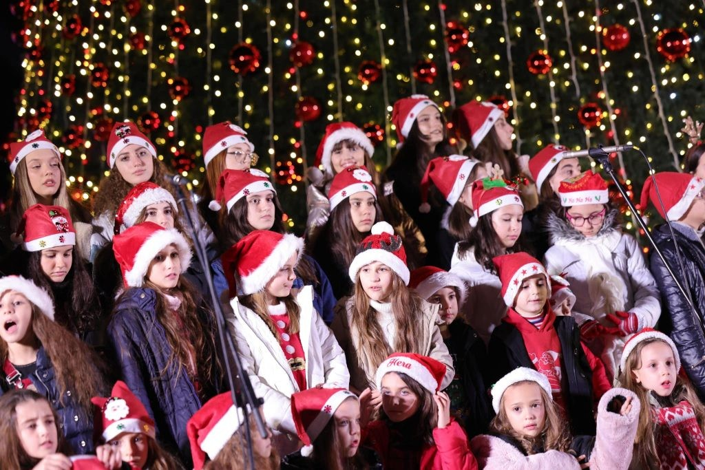
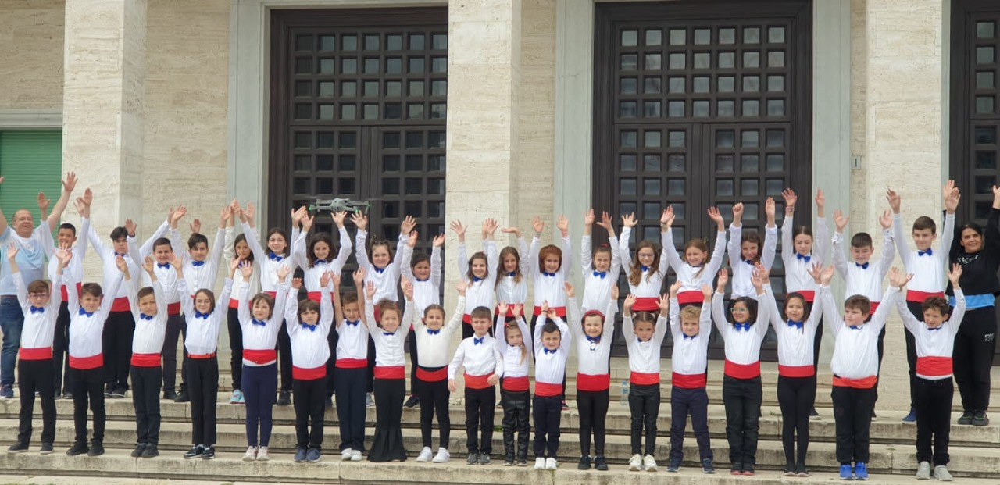
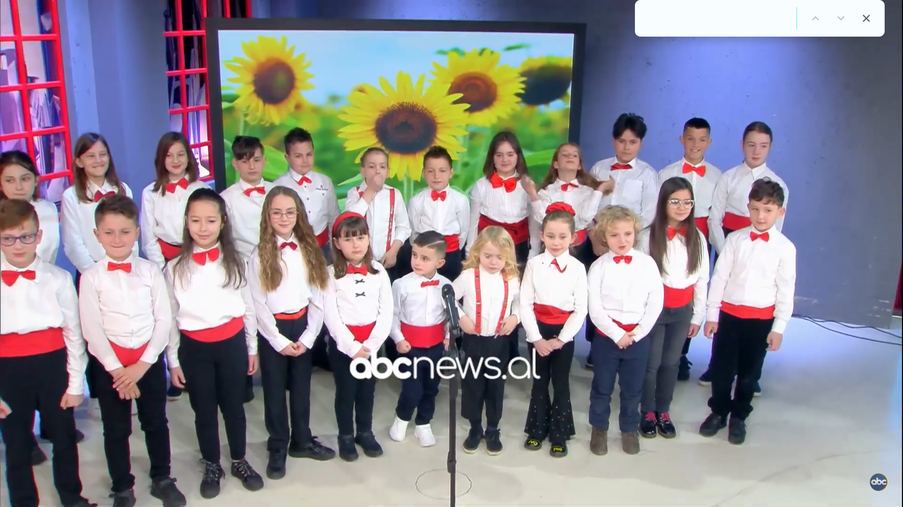
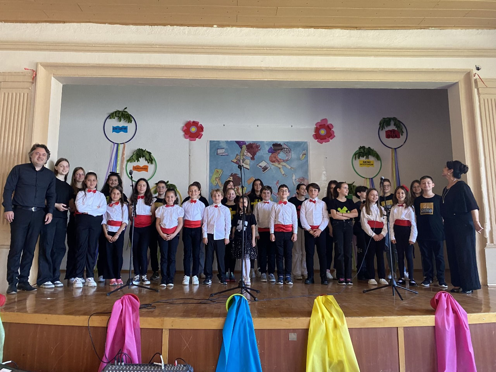
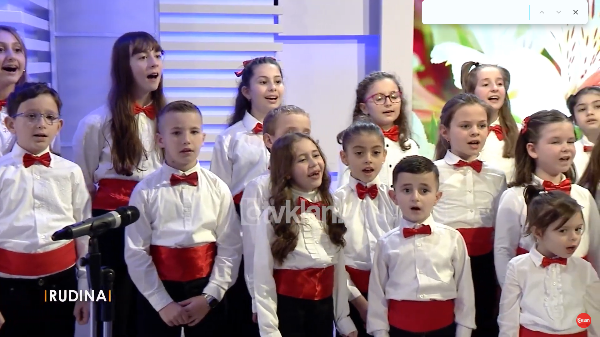
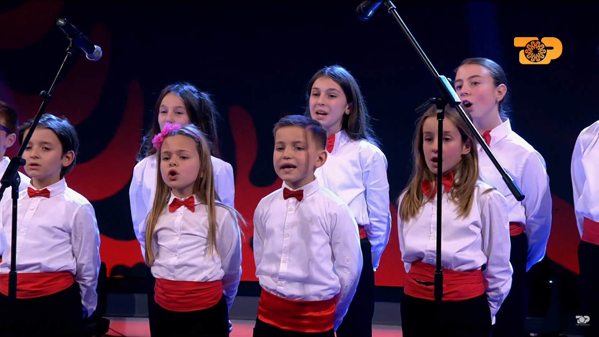
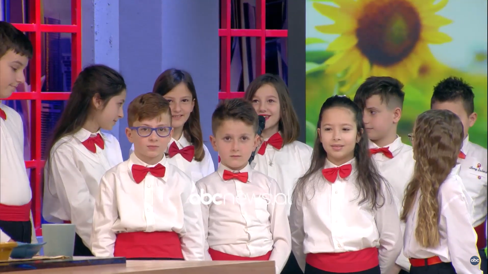
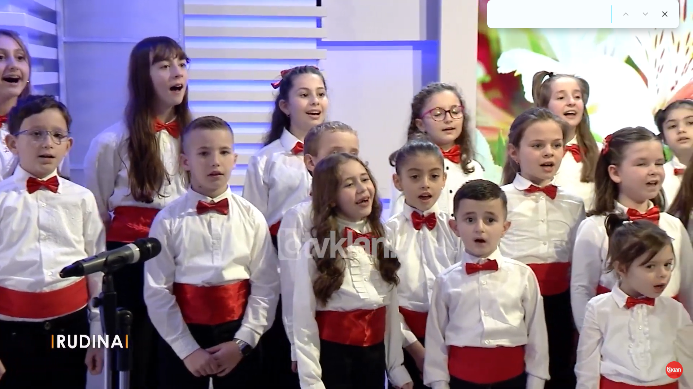
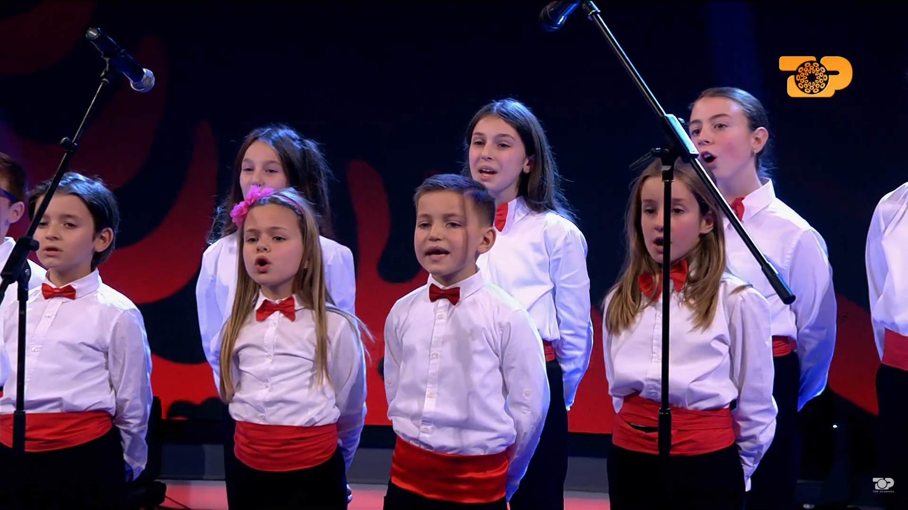
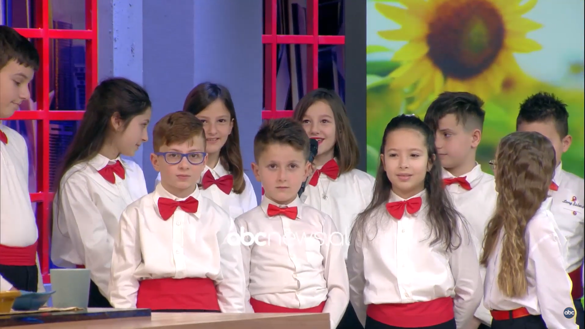

Historiku i Koncerteve dhe Performancave
Dhjetor 2014 – Vazhdon çdo vit
Koncerti i Krishtlindjes
Organizohet çdo muaj Dhjetor, si pjesë e traditës vjetore të korit.

Qershor 2015 – Vazhdon çdo vit
Koncerti i Fundvitit Artistik
Mbahet çdo Qershor, në mbyllje të sezonit artistik të korit.

Qershor 2021 – Vazhdon çdo vit
Festivali "Qershori Ynë, Mirë se Vjen" – Tiranë
Kori bëhet pjesë e rëndësishme e këtij takimi të koreve për fëmijë. Shembull pozitiv në krijimin e rrjetit të koreve për fëmijë në Shqipëri.

Gjatë vitit 2023
Bashkëpunim me UNFPA
Performanca dhe koncerte në kuadër të projektit: Tjetër herë me Vajzë...

Maj 2024
Performancë në Maqedoninë e Veriut
Kori "Mrekullia" performon dhe bashkëpunon me korin e SHFK "Vëllazërim Bashkim" – Ohër. Një shkëmbim artistik ndërkufitar i suksesshëm.

 




